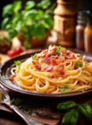

Spaghetti Carbonara

Ingredients
- 200g Spaghetti
- 100g Pancetta
- 2 large eggs
- 50g Pecorino Romano cheese, grated
- 50g Parmesan cheese, grated
- Freshly ground black pepper
- Salt
Steps to Prepare
- Boil water in a large pot and add a pinch of salt.
- Cook the spaghetti until al dente.
- In a separate pan, cook the pancetta until crispy.
- Beat the eggs in a bowl and mix in the cheeses and pepper.
- Drain the pasta, reserving some of the pasta water.
- Mix the pasta with the pancetta, then remove from heat and stir in the egg and cheese mixture.
- Add pasta water as needed to create a creamy sauce.
- Serve imediately with extra cheese and pepper.
Equiptment
- Large Pot
- Fill the pot with water.
- Bring the water to a boil before adding pasta.
- Frying Pan
- Heat the pan over medium heat.
- Cook the pancetta until crispy.
- Mixing Bowl
- Whisk
Serving Suggestions
- Top with extra Pecorino Romano and freshly ground black pepper.
- Serve with a side of garlic bread.
- Pair with a crisp white wine, like Pinot Grigio.